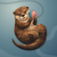
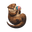
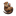
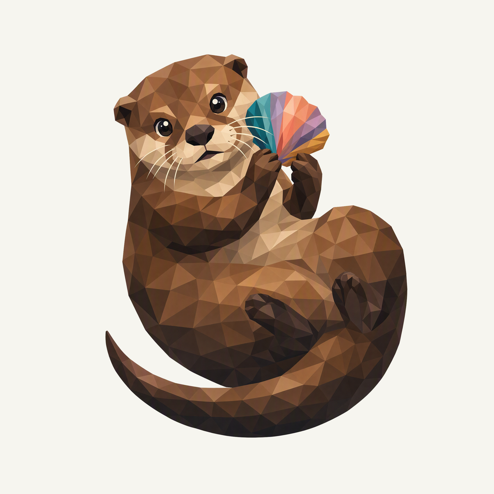
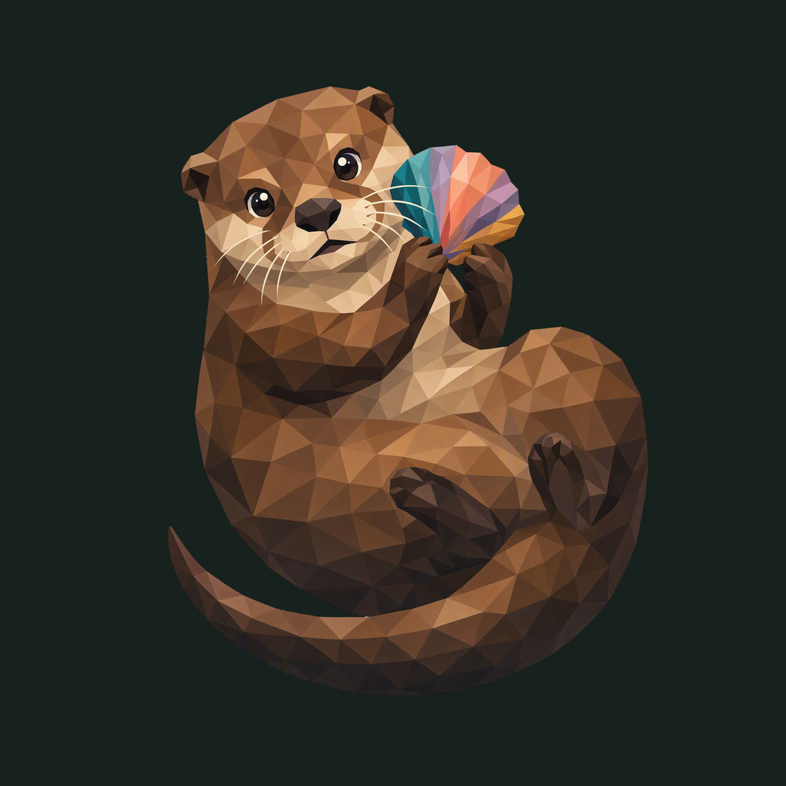

01 / Composition
A small river treasure
The otter pauses in a relaxed curl and holds a shell beside its muzzle. Small ears, cream whisker pads, natural paws and a tapering tail make the species clear.
Animal family · Refined identity
One brown otter, one small treasure. A clear face returns to the family.
Adopted redesign · finishing 02
Native 2048 × 2048
01 / Composition
The otter pauses in a relaxed curl and holds a shell beside its muzzle. Small ears, cream whisker pads, natural paws and a tapering tail make the species clear.
02 / Drawing
Chestnut, umber and cream replace the competing body colors. A single fan-shaped shell carries turquoise, coral, violet and gold beside the face.
03 / Presentation
Two broad offset eddies and a low bank sweep cross a blue-gray field. Open curves and fine grain give the warm animal a cooler, quiet setting.
Presentation tiles at 128/64 px; transparent artwork for small app and browser marks.



The complete animal and accessory have at least 224.5 px clearance from the actual rounded outline. Ten export sizes preserve one uniform placement. Small app/browser marks use the transparent foreground; fine facets and accessory details simplify at 16 px.
A designed background, with colors sampled from the exact native artwork.
Select a swatch to copy its hex value. The Otter UI primary (#1B99A7) remains a separate product color.
One transparent foreground, checked on two contrasting backgrounds.


Azure Foundry · gpt-image-2 · one request · native 2048 × 2048
Loading study text…
The previous identity is historical context; the current brief defines the selected animal, gesture and palette. Frogie guides connected flat facets; these owner-provided boards guide the independent background, offset framing, and matte surface.


{kind=link}
{kind=link}
{kind=link}
{kind=link}
{kind=link}